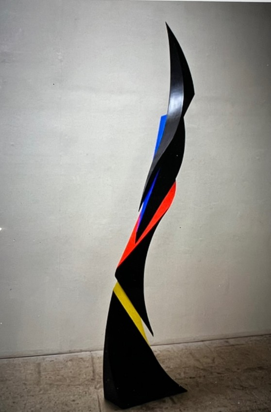
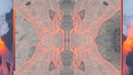
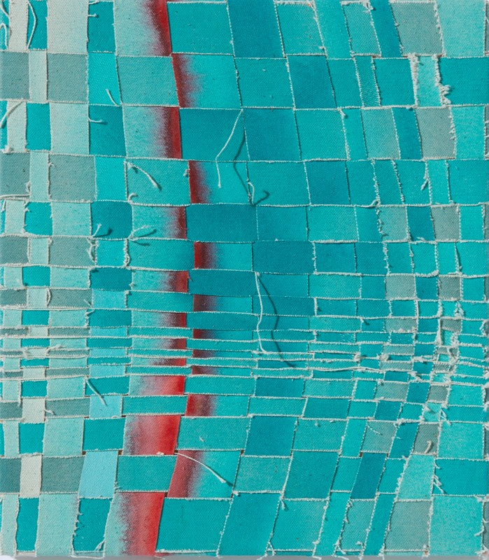
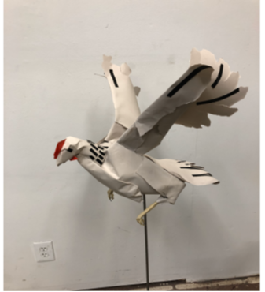

The Dome Today
The Orchard Galleries are pleased to present a group exhibition celebrating the legacy of The Dome Center for the Arts as well as the current artists have been part of its creative community.
Featured artists include Laura Van Duren, J.P. Long, Jo Gillerman, Maya Kabat, Joe Slusky, Clay Jensen, Joseph Melamed, Kyle Reicher, Megan Mirro, Sophia Pousson, Bella Feldman, and Leah Virsik.




On View
July 11 – Aug 29
Opening Reception
July 11th · 1 – 5 pm
Location
489 25th St. Oakland